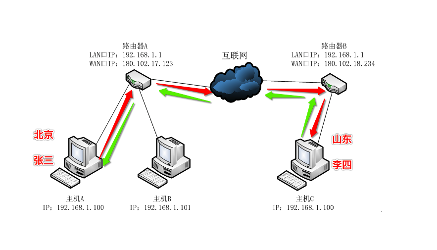

socket简介
1. 引入
程序如果想通过网络进行收发数据，需要使用socket进行编程来实现
2. 不同电脑上程序之间如何通信

为了能够完成2台电脑（可以更多）上程序之间通信，需要有几个条件：
- 明确是哪台电脑到哪台电脑，即用ip地址来标记
- 明确电脑上的那个程序，即用端口来标记
- 还要明确怎样进行传送数据，即网络协议（可以通俗的理解为怎样发送数据，怎样接收数据的规范）
3. 什么是socket
socket(简称 套接字) 是进程（就是运行中的程序）间通信的一种方式，它与其他进程间通信的一个主要不同是：
它能实现不同主机间的进程间通信，我们网络上各种各样的服务大多都是基于 socket 来完成通信的
例如: 我们每天浏览网页、QQ 聊天、收发 email 等等


4. 创建socket
在 Python 中 使用socket 模块的socket 函数就可以完成：
import socket
socket.socket(AddressFamily, Type)
说明：
函数 socket.socket 创建一个套接字，该函数带有两个参数：
Address Family：可以选择AF_INET（用于 Internet 进程间通信） 或者AF_UNIX（用于同一台机器进程间通信）,实际工作中常用AF_INETType：套接字类型，可以是SOCK_STREAM（流式套接字，主要用于 TCP 协议）或者SOCK_DGRAM（数据报套接字，主要用于 UDP 协议）
4.1 创建一个tcp socket（tcp套接字）
import socket
# 创建tcp的套接字
s = socket.socket(socket.AF_INET, socket.SOCK_STREAM)
# ...这里是使用套接字的功能（省略）...
# 不用的时候，关闭套接字
s.close()
4.2 创建一个udp socket（udp套接字）
import socket
# 创建udp的套接字
s = socket.socket(socket.AF_INET, socket.SOCK_DGRAM)
# ...这里是使用套接字的功能（省略）...
# 不用的时候，关闭套接字
s.close()
4.3 说明
套接字使用流程 与 文件的使用流程很类似
- 创建套接字
- 使用套接字收/发数据
- 关闭套接字